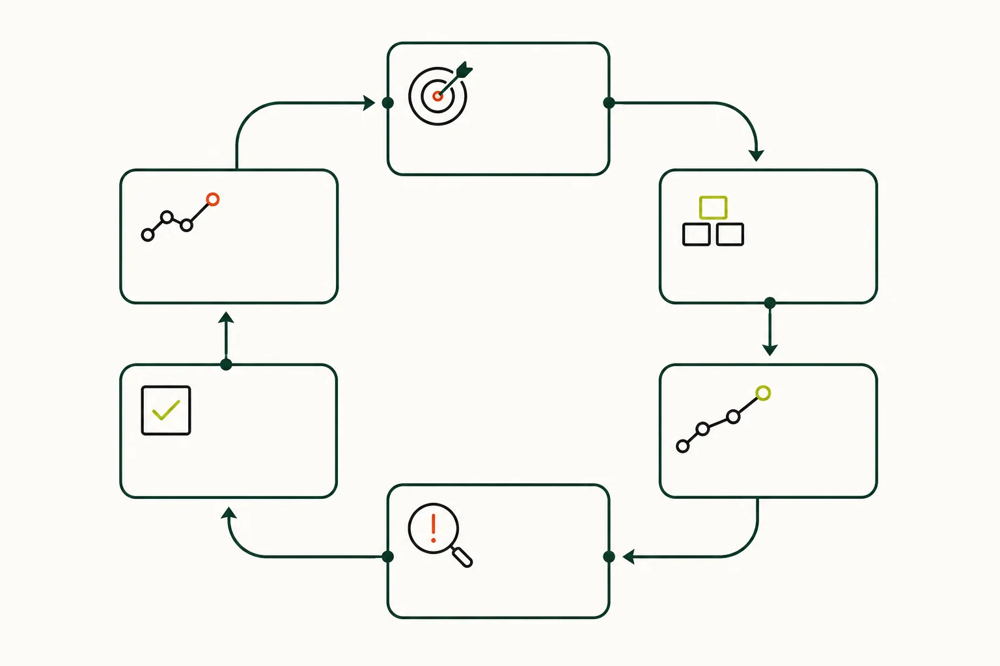

部分核實版權限制
研究領域
教學與學習
從下列子題閱讀相關文章，或查找本領域已收錄的 18 筆來源。各子題的資料深度不同，頁內另列收錄狀況。
L3 · 教學可用20 個去重來源12 項核對紀錄
12 項已記錄核對的陳述 · 1246 字正文
本頁達到站內正文門檻，並附核對來源。層級反映資料覆蓋，不等於外部專家認證；引用前請核對原文。 來源數依站內規則去重，尚未逐一追查相互引用的依賴關係。
已核實專題
1 篇
相關來源
18 筆
研究論文 · 2024
Transmission, cultural significance, and social dynamics of the Ti-Tzu Ten-Hole bamboo flute in Sichuan Province, China
Qiang Wang、Chalermsak Pikulsri、Pornpan Kaenampornpan
歷史與文化地域與流派教學與學習
已核實開放取用
部分核實版權限制
部分核實版權限制
部分核實版權限制
部分核實版權限制
學位論文 · 1991
Music and musicians of the traditional Chinese 'dizi' in the People's Republic of China
Frederick Cheungkong Lau
歷史與文化人物與機構地域與流派曲目、作曲及演奏實踐教學與學習
部分核實只提供書目資料
Youtube Video · 2020-09-03
D key dizi flute- Double tonguing technique practice D调竹笛《练习曲 双吐》全按作5 边看谱边练习 @Dan Tang
DanTang&Chinese bamboo flute
教學與學習指法與演奏技法
部分核實只提供連結
部分核實版權限制
部分核實版權限制
未核實版權限制
未核實版權限制
部分核實只供原站閱覽
部分核實版權限制
部分核實版權限制
部分核實版權限制
部分核實版權限制
部分核實版權限制
本篇視覺示意（非教學圖）
